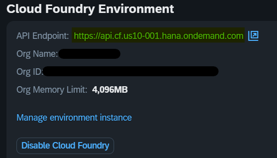

Issue: Deploy to Cloud Foundry Organization
Summary
This page addresses the issue of deploying an CAP application to a Cloud Foundry organization and provides solutions to common errors encountered during the process.
Issue
When you try to deploy your application to Cloud Foundry organization, you may get the following error message:
No org targeted, use 'cf target -o ORG' to target an org.
or
Error occurred: Could not get access token: Authentication has expired. Please log back in to re-authenticate.
This error message is shown because you have not targeted an organization in Cloud Foundry.
Possible Solutions
Solution 1: Re-authenticate
If you encounter the authentication error, you need to log back in to re-authenticate.
To re-authenticate, you can sign in to SAP Cloud Foundry by pressing Ctrl+Shift+P and typing CF: Login to Cloud Foundry. Then, you can select the authentication method and enter the required information.*
Select SSO Passcode in the authentication method and click on the link under the SSO Passcode radio button.
|
Get Cloud Foundry endpoint
You can get the Cloud Foundry endpoint in the SAP Business Technology Platform (BTP) Cockpit Overview page at Cloud Foundry Environment section.

|
Solution 2: Select an Organization
To resolve the issue of not targeting an organization, you need to select an organization in Cloud Foundry. You can target an organization by pressing Ctrl+Shift+P and typing CF: Login to Cloud Foundry
Then, you can select the organization that you want to target.
Don’t forget to apply the changes by clicking on Apply button.